Chapter 1 Fractions Exercise 1.1
- i) \(14\frac{1}{4}\) ii) Mixed Fraction iii) \(2\frac{1}{6}\) iv) 16 v) 1
- i) True ii) False iii) True iv) True v) False
- i) \(\frac{10}{21}\) ii) \(7\frac{1}{2}\) iii) \(7\frac{6}{35}\) iv) \(\frac{38}{63}\) v) \(\frac{11}{15}\) vi) \(4\frac{2}{21}\)
- i) \(\frac{61}{18}\) ii) \(14\frac{1}{7}\) iii) \(7\frac{5}{6}\) iv) \(\frac{109}{9}\)
- i) 4 ii) \(41\frac{2}{3}\) iii) \(\frac{3}{10}\) iv) 4
- i) \(\frac{3}{28}\) ii) \(2\frac{2}{5}\) iii) \(1\frac{3}{25}\) iv) \(5\frac{4}{5}\)
- \(5\frac{1}{2}\) kg
- \(1\frac{1}{4}\) \(l\)
- \(15\frac{3}{4}\) km
- 7
- d) \(\frac{10}{11} < \frac{9}{10}\)
- a) \(\frac{13}{63}\)
- c) \(\frac{17}{53}\)
- a) 42
- c) \(\frac{4}{5}\) of ₹150
Exercise 1.2
- ₹510
- \(3\frac{1}{4}\) km
- The difference between \(2\frac{1}{2}\) and \(3\frac{2}{3}\) is smaller
- \(10\frac{1}{8}\) kg
- 22 steps
- \(\frac{4}{8}\) & many answers
- \(3\frac{2}{3}\)
- \(6\frac{8}{35}\)
- \(2\frac{7}{12}\)
- 3
- \(\frac{1}{20}, \frac{1}{30}, \frac{1}{20}\)
- \(\frac{1}{8}\)
- 15
- i) \(4\frac{1}{4}\) km ii) \(5\frac{3}{4}\) km iii) Via Bus Stand iv) 6 times
Chapter 2 Integers Exercise 2.1
- i) \(-100\) ii) \(-7\) iii) left iv) 11 v) 0
- i) True ii) False iii) False iv) False v) True
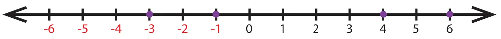
- i) \(-3\) ii) \(-2\)
- i) \(-44\) ii) +19 or 19 iii) 0 iv) 312 v) \(-789\)
- i) \(-15\) km
- i) Wrong, Integers are not continuously marked
ii) Correct, Integers are correctly marked.
iii) Wrong, Integer \(-2\) is marked wrongly.
iv) Correct, Integers are marked at equal distance.
v) Wrong, negative integers marked wrongly. - i) 8, 9 ii) \(-4, -3, -2, -1, 0, 1, 2, 3\) iii) \(-2, -1, 0, 1, 2\) iv) \(-4, -3, -2, -1\)
- i) \(-7 < 8\) ii) \(-8 < -7\) iii) \(-999 > -1000\) iv) \(-111 = -111\) v) \(0 > -200\)
- i) \(-20, -19, -17, -15, -13, -11, 12, 14, 16, 18\)
ii) \(-40, -28, -5, -1, 0, 4, 6, 8, 12, 22\)
iii) \(-1000, -100, -10, -1, 0, 1, 10, 100, 1000\) - i) \(27, 15, 14, 11, 0, -9, -14, -17\) ii) \(400, 78, 65, -46, -99, -120, -600\)
iii) \(777, 555, 333, 111, -222, -444, -666, -888\) - c) 7
- a) 20
- d) \(-6\)
- c) \(-2\)
- b) 0
Exercise 2.2
- i) a sapling planted at a depth of 3m ii) a pit which is 3m deep
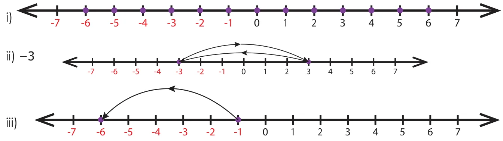
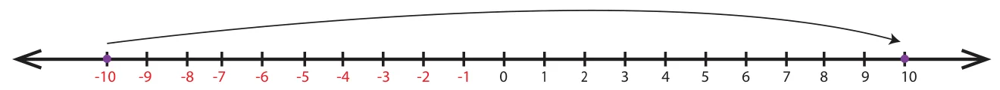
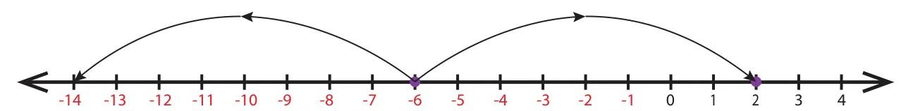
- i) K \((-1)\) ii) \(-4\) iii) 6 \((-2, -1, 0, 1, 2, 3)\) iv) (C,H), (E, J) v) False, 0
- \(-3, 7\)
- \(-4, -1\)
- No, as the number line number extends on both sides without any end, we cannot find the smallest (\(-\)) and the largest (+) number
- i) \(-10^{\circ}\text{C}\) ii) \(-5^{\circ}\text{C}\) iii) \(-20^{\circ}\text{C}\) iv) \(-15^{\circ}\text{C}\)
- \(S < Q < 0 < R < P\)
- i) 3 ii) \(-2\) iii) \(-6\) iv) \(-1\) v) \(-5\) vi) \(-4\) vii) 4 viii) 4 ix) 5 x) 2
- C1: 0, C3: 2, C5: 0, C6: \(-4\), C8: \(-8\), C9: 0
- i) \(+45\) ii) 0 iii) \(-10\) & \(-20\) iv) False v) the same
Chapter 3 Perimeter and Area Exercise 3.1
- i) 26 cm, 40 \(\text{cm}^{2}\) ii) 14 cm, 182 \(\text{cm}^{2}\) iii) 15 cm, 225 \(\text{cm}^{2}\) iv) 12 m, 44 cm v) 5 feet, 18 feet
- i) 24 cm, 36 \(\text{cm}^{2}\) ii) 25 m, 625 \(\text{cm}^{2}\) iii) 7 feet, 28 feet
- i) 400 \(\text{cm}^{2}\) ii) 8 feet iii) 4 m
- i) 13 m ii) 6 m iii) 8 feet
- i) 500 ii) 2,60,000 iii) 80,00,000
- i) 48 cm, 80 \(\text{cm}^{2}\) ii) 36 cm, 33 \(\text{cm}^{2}\) iii) 150 cm, 380 \(\text{cm}^{2}\)
- 20 m, 24 \(\text{m}^{2}\)
- 32 cm, 64 \(\text{cm}^{2}\)
- 24 feet, 24 sq. feet
- i) 25 m ii) 27 cm iii) 18 cm
- 41 cm, 122 cm
- 10 m, 100 \(\text{m}^{2}\)
- 12 cm
- 250 \(\text{m}^{2}\), ₹11250/-
- 54 cm
- b)
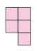
- b) less than 60 cm
- c) 4 times
- d) 3 times
- c) Both the area & perimeter are changed
Exercise 3.2
- i) 9 cm ii) 12 cm
- 114 cm
- Rahim, 120 m
- 57 m, 2451 \(\text{m}^{2}\)
- ₹400/-
- 60 cm
- 8
- 8 cm, 24 cm
- 12, (1,23), (2,22), (3,21), (4,20), (5,19), (6,18), (7,17), (8,16), (9,15), (10,14), (11,13), (12,12)
- Perimeter of square B is twice that of square A
- Area of the new square is reduced to \(1/16\) times to that of original area
- Square plot by 4 \(\text{m}^{2}\)
- 102 \(\text{cm}^{2}\)
- 15.5 sq.units
Chapter 4 Symmetry Exercise 4.1
- i) P ii) Two iii) Two iv) Two v) Translation
- i) False ii) True iii) False iv) True v) False
- i) d ii) a iii) b iv) c

- i) DECODE ii) KICK iii) BED iv) WAY v) MATH vi) TOMATO
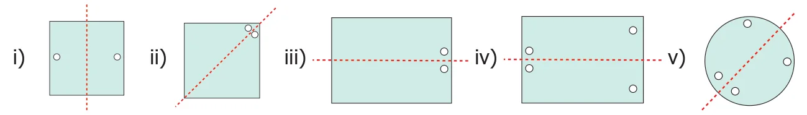
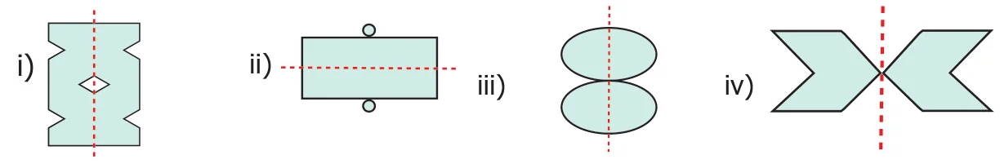
- i) 2 ii) 2 iii) 4 iv) 8 v) 2
- i) 4 ii) 2 iii) 2 iv) 4 v) 4 vi) 2
- i)


- b) P
- c)
- c) MAM
- b) 2
- a) 5
Exercise 4.2
- i) Scalene triangle ii) Isosceles triangle iii) Equilateral triangle
- i) P, N, S, Z ii) I, O, N, X, S, H, Z iii) A, M, E, D, I, K, O, X, H, U, V, W iv) I, O, X, H
- i) 0, 2 ii) 1, 0 iii) 2, 2 iv) 8, 8 v) 1, 0
- I8I, III, 808, 8I8, 888
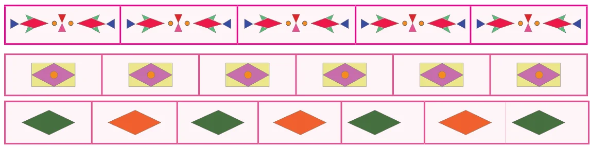
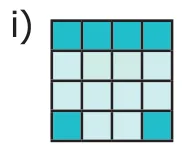
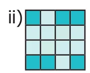
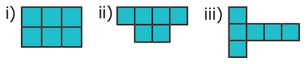
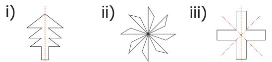
- i) 10 ii) 10 iii) n, n

Chapter 5 Information Processing